2. Installation¶
2.1. Pre-compiled executables¶
Pre-compiled LAMMPS executable packages that include the GUI are
currently available from https://download.lammps.org/static/ or
https://github.com/lammps/lammps/releases. For Windows, you need to
download and then run the application installer. For macOS you download
and mount the disk image and then drag the application bundle to the
Applications folder. For Linux (x86_64) you currently have two
options: 1) you can download the tar.gz archive, unpack it and run the
GUI directly in place. The LAMMPS_GUI folder may also be moved
around and added to the PATH environment variable so the executables
will be found automatically. 2) you can download the Flatpak file and then install it locally with the
flatpak command: flatpak install --user
LAMMPS-Linux-x86_64-GUI-<version>.flatpak and run it with flatpak
run org.lammps.lammps-gui. The flatpak bundle also includes the
command-line version of LAMMPS and some LAMMPS tools like msi2lmp. The
can be launched by using the --command flag. For example to run
LAMMPS directly on the in.lj benchmark input you would type in the
bench folder: flatpak run --command=lmp -in in.lj The flatpak
version should also appear in the applications menu of standard desktop
environments. The LAMMPS-GUI executable is called lammps-gui and
either takes no arguments or attempts to load the first argument as
LAMMPS input file.
2.2. Compilation¶
The source for the LAMMPS-GUI is included with the LAMMPS source code
distribution in the folder tools/lammps-gui and thus it can be can
be built as part of a regular LAMMPS compilation. Using CMake is required. To enable its compilation, the CMake
variable -D BUILD_LAMMPS_GUI=on must be set when creating the CMake
configuration. All other settings (compiler, flags, compile type) for
LAMMPS-GUI are then inherited from the regular LAMMPS build. If the Qt
library is packaged for Linux distributions, then its location is
typically auto-detected since the required CMake configuration files are
stored in a location where CMake can find them without additional help.
Otherwise, the location of the Qt library installation must be indicated
by setting -D Qt5_DIR=/path/to/qt5/lib/cmake/Qt5, which is a path to
a folder inside the Qt installation that contains the file
Qt5Config.cmake. Similarly, for Qt6 the location of the Qt library
installation can be indicated by setting -D
Qt6_DIR=/path/to/qt6/lib/cmake/Qt6, if necessary. When both, Qt5 and
Qt6 are available, Qt6 will be preferred unless -D
LAMMPS_GUI_USE_QT5=yes is set.
It is possible to build the LAMMPS-GUI as a standalone compilation
(e.g. when LAMMPS has been compiled with traditional make). Then the
CMake configuration needs to be told where to find the LAMMPS headers
and the LAMMPS library, via -D LAMMPS_SOURCE_DIR=/path/to/lammps/src.
CMake will try to guess a build folder with the LAMMPS library from that
path, but it can also be set with -D LAMMPS_LIB_DIR=/path/to/lammps/lib.
2.2.1. Plugin version¶
Rather than linking to the LAMMPS library during compilation, it is also
possible to compile the GUI with a plugin loader that will load the
LAMMPS library dynamically at runtime during the start of the GUI from a
shared library; e.g. liblammps.so or liblammps.dylib or
liblammps.dll (depending on the operating system). This has the
advantage that the LAMMPS library can be built from updated or modified
LAMMPS source without having to recompile the GUI. The ABI of the
LAMMPS C-library interface is very stable and generally backward
compatible. This feature is enabled by setting -D
LAMMPS_GUI_USE_PLUGIN=on and then -D
LAMMPS_PLUGINLIB_DIR=/path/to/lammps/plugin/loader. Typically, this
would be the examples/COUPLE/plugin folder of the LAMMPS
distribution.
When compiling LAMMPS-GUI with plugin support, there is an additional
command-line flag (-p <path> or --pluginpath <path>) which
allows to override the path to LAMMPS shared library used by the GUI.
This is usually auto-detected on the first run and can be changed in the
LAMMPS-GUI Preferences dialog. The command-line flag allows to reset
this path to a valid value in case the original setting has become
invalid. An empty path (“”) as argument restores the default setting.
Changed in version TBD.
When loading a LAMMPS library, it must be at least version 27 August 2025 for LAMMPS-GUI version 1.7.1, since it uses features only available since that LAMMPS version. Older LAMMPS versions will be rejected.
2.3. Platform notes¶
2.3.1. macOS¶
When building on macOS, the build procedure will try to manufacture a
drag-n-drop installer, LAMMPS-macOS-multiarch.dmg, when using the
‘dmg’ target (i.e. cmake --build <build dir> --target dmg or make dmg.
To build multi-arch executables that will run on both, arm64 and x86_64
architectures natively, it is necessary to set the CMake variable -D
CMAKE_OSX_ARCHITECTURES=arm64;x86_64. To achieve wide compatibility
with different macOS versions, you can also set -D
CMAKE_OSX_DEPLOYMENT_TARGET=11.0 which will set compatibility to macOS
11 (Big Sur) and later, even if you are compiling on a more recent macOS
version.
2.3.2. Windows¶
On Windows either native compilation from within Visual Studio 2022 with Visual C++ is supported and tested, or compilation with the MinGW / GCC cross-compiler environment on Fedora Linux.
Visual Studio
Using CMake and Ninja as build system are required. Qt needs to be
installed, tested was a binary package downloaded from
https://www.qt.io, which installs into the C:\\Qt folder by default.
There is a custom x64-GUI-MSVC build configuration provided in the
CMakeSettings.json file that Visual Studio uses to store different
compilation settings for project. Choosing this configuration will
activate building the lammps-gui.exe executable in addition to LAMMPS
through importing package selection from the windows.cmake preset
file and enabling building the LAMMPS-GUI and disabling building with MPI.
When requesting an installation from the Build menu in Visual Studio,
it will create a compressed LAMMPS-Win10-amd64.zip zip file with the
executables and required dependent .dll files. This zip file can be
uncompressed and lammps-gui.exe run directly from there. The
uncompressed folder can be added to the PATH environment and LAMMPS
and LAMMPS-GUI can be launched from anywhere from the command-line.
MinGW64 Cross-compiler
The standard CMake build procedure can be applied and the
mingw-cross.cmake preset used. By using mingw64-cmake the CMake
command will automatically include a suitable CMake toolchain file (the
regular cmake command can be used after that to modify the configuration
settings, if needed). After building the libraries and executables,
you can build the target ‘zip’ (i.e. cmake --build <build dir> --target zip
or make zip to stage all installed files into a LAMMPS_GUI folder
and then run a script to copy all required dependencies, some other files,
and create a zip file from it.
2.3.3. Linux¶
Version 5.12 or later of the Qt library is required. Those are provided
by, e.g., Ubuntu 20.04LTS. Thus older Linux distributions are not
likely to be supported, while more recent ones will work, even for
pre-compiled executables (see above). After compiling with
cmake --build <build folder>, use cmake --build <build
folder> --target tgz or make tgz to build a
LAMMPS-Linux-amd64.tar.gz file with the executables and their
support libraries.
It is also possible to build a flatpak bundle which is
a way to distribute applications in a way that is compatible with most
Linux distributions. Use the “flatpak” target to trigger a compile
(cmake --build <build folder> --target flatpak or make flatpak).
Please note that this will not build from the local sources but from the
repository and branch listed in the org.lammps.lammps-gui.yml
LAMMPS-GUI source folder.
LAMMPS-GUI aims to provide the traditional experience of running LAMMPS using a text editor, a command-line window, and launching the LAMMPS text-mode executable printing output to the screen, but just integrated into a single application:
Write and edit LAMMPS input files using the built-in text editor.
Run LAMMPS on those input file with command-line flags to enable a specific accelerator package (or none).
Extract data from the created files (like trajectory files, log files with thermodynamic data, or images) and visualize it using external software.
That traditional procedure is effective for people proficient in using the command-line, as it allows them to use the tools for the individual steps that they are most comfortable with. In fact, it is often required to adopt this workflow when running LAMMPS simulations on high-performance computing facilities.
The main benefit of using LAMMPS-GUI is that many basic tasks can be done directly from the GUI without switching to a text console window or using external programs, let alone writing scripts to extract data from the generated output. It also integrates well with graphical desktop environments where the .lmp filename extension can be registered with LAMMPS-GUI as the executable to launch when double clicking on such files using a file manager. LAMMPS-GUI also has support for ‘drag and drop’ for opening inputs: an input file can be selected and then moved and dropped on the LAMMPS-GUI executable; LAMMPS-GUI will launch and read the file into its buffer. Input files also can be dropped into the editor window of the running LAMMPS-GUI application, which will close the current file and open the new file. In many cases LAMMPS-GUI will be integrated into the graphical desktop environment and can be launched just like any other applications from the graphical interface.
LAMMPS-GUI thus makes it easier for beginners to get started running LAMMPS and is well-suited for LAMMPS tutorials, since you only need to work with a single, ready-to-use program for most of the tasks. Plus it is available for download as pre-compiled package for popular operating systems (Linux, macOS, Windows). This saves time and allows users to focus on learning LAMMPS itself, without the need to learn how to compile LAMMPS, learn how to use the command line, or learn how to use a separate text editor.
The tutorials at https://lammpstutorials.github.io/ are specifically updated for use with LAMMPS-GUI and their tutorial materials can be downloaded and edited directly from within the GUI while automatically loading the matching tutorial instructions into a webbrowser.
Yet the basic control flow remains similar to running LAMMPS from the command line, so the barrier for replacing parts of the functionality of LAMMPS-GUI with external tools is low. That said, LAMMPS-GUI offer some unique features that are not easily found elsewhere:
auto-adapting to features available in the integrated LAMMPS library
auto-completion for available LAMMPS commands and options only
context-sensitive online help for known LAMMPS commands
start and stop of simulations via mouse or keyboard
monitoring of simulation progress and CPU use
interactive visualization using the LAMMPS dump image feature command with the option to copy-paste the resulting settings
automatic slide show generation from dump image output at runtime
automatic plotting of thermodynamic data at runtime
inspection of binary restart files
integration will a set of LAMMPS tutorials
Download LAMMPS-GUI for your platform
Pre-compiled, ready-to-use LAMMPS-GUI executables for Linux x86_64
(Ubuntu 20.04LTS or later and compatible), macOS (version 11 aka Big
Sur or later), and Windows (version 10 or later) are available for download. Non-MPI LAMMPS executables (as
lmp) for running LAMMPS from the command-line and some
LAMMPS tools compiled executables are also included. Also,
the pre-compiled LAMMPS-GUI packages include the WHAM executables
from http://membrane.urmc.rochester.edu/content/wham/ for use with
LAMMPS tutorials documented in this paper (Gravelle1).
The source code for LAMMPS-GUI is included in the LAMMPS source code
distribution and can be found in the tools/lammps-gui folder. It
can be compiled alongside LAMMPS when compiling with CMake.
The following text provides a documentation of the features and functionality of LAMMPS-GUI. Suggestions for new features and reports of bugs are always welcome. You can use the the same channels as for LAMMPS itself for that purpose.
Installing Pre-compiled LAMMPS-GUI Packages¶
LAMMPS-GUI is available for download as pre-compiled binary packages for Linux x86_64 (Ubuntu 22.04LTS or later and compatible), macOS (version 11 aka Big Sur or later), and Windows (version 10 or later) from the LAMMPS release pages on GitHub. A backup download location is at https://download.lammps.org/static/ Alternately, LAMMPS-GUI can be compiled from source when building LAMMPS.
GPU support and MPI parallelization
The pre-compiled packages include support for GPUs through the GPU package with OpenCL (in mixed precision). However, this requires that you have a compatible driver and the OpenCL runtime installed. This is not always available and when using the flatpak package, the flatpak sandbox prevents accessing the GPU. GPU support through KOKKOS is currently not available for technical reasons, but serial and OpenMP multi-threading is available.
The design decisions for LAMMPS-GUI and how it launches LAMMPS conflict with parallel runs using MPI. You have to use a regular LAMMPS executable compiled with MPI support for that. For the use cases that LAMMPS-GUI has been conceived for this is not a significant limitation.
2.4. Windows 10 and later¶
After downloading the LAMMPS-Win10-64bit-GUI-<version>.exe installer
package, you need to execute it, and start the installation process.
Since those packages are currently unsigned, you have to enable “Developer Mode”
in the Windows System Settings to run the installer.
2.5. MacOS 11 and later¶
After downloading the LAMMPS-macOS-multiarch-GUI-<version>.dmg
application bundle disk image, you need to double-click it and then, in
the window that opens, drag the app bundle as indicated into the
“Applications” folder. Afterwards, the disk image can be unmounted.
Then follow the instructions in the “README.txt” file to get access to
the other included command-line executables.
2.6. Linux on x86_64¶
For Linux with x86_64 CPU there are currently two variants. The first
is compiled on Ubuntu 20.04LTS, is using some wrapper scripts, and
should be compatible with more recent Linux distributions. After
downloading and unpacking the
LAMMPS-Linux-x86_64-GUI-<version>.tar.gz package. You can switch
into the “LAMMPS_GUI” folder and execute “./lammps-gui” directly.
The second variant uses flatpak and
requires the flatpak management and runtime software to be installed.
After downloading the LAMMPS-GUI-Linux-x86_64-GUI-<version>.flatpak
flatpak bundle, you can install it with flatpak install --user
LAMMPS-GUI-Linux-x86_64-GUI-<version>.flatpak. After installation,
LAMMPS-GUI should be integrated into your desktop environment under
“Applications > Science” but also can be launched from the console with
flatpak run org.lammps.lammps-gui. The flatpak bundle also includes
the console LAMMPS executable lmp which can be launched to run
simulations with, for example with:
flatpak run --command=lmp org.lammps.lammps-gui -in in.melt
Other bundled command-line executables are run the same way and can be listed with:
ls $(flatpak info --show-location org.lammps.lammps-gui )/files/bin
2.7. Compiling from Source¶
There also are instructions for compiling LAMMPS-GUI from source code available elsewhere in the manual. Compilation from source requires using CMake.
When LAMMPS-GUI starts, it shows the main window, labeled Editor, with either an empty buffer or the contents of the file used as argument. In the latter case it may look like the following:
There is the typical menu bar at the top, then the main editor buffer, and a status bar at the bottom. The input file contents are shown with line numbers on the left and the input is colored according to the LAMMPS input file syntax. The status bar shows the status of LAMMPS execution on the left (e.g. “Ready.” when idle) and the current working directory on the right. The name of the current file in the buffer is shown in the window title; the word *modified* is added if the buffer edits have not yet saved to a file. The geometry of the main window is stored when exiting and restored when starting again.
2.8. Opening Files¶
The LAMMPS-GUI application can be launched without command-line arguments
and then starts with an empty buffer in the Editor window. If arguments
are given LAMMPS will use first command-line argument as the file name for
the Editor buffer and reads its contents into the buffer, if the file
exists. All further arguments are ignored. Files can also be opened via
the File menu, the Ctrl-O (Command-O on macOS) keyboard shortcut
or by drag-and-drop of a file from a graphical file manager into the editor
window. If a file extension (e.g. .lmp) has been registered with the
graphical environment to launch LAMMPS-GUI, an existing input file can
be launched with LAMMPS-GUI through double clicking.
Only one file can be edited at a time, so opening a new file with a filled buffer closes that buffer. If the buffer has unsaved modifications, you are asked to either cancel the operation, discard the changes, or save them. A buffer with modifications can be saved any time from the “File” menu, by the keyboard shortcut Ctrl-S (Command-S on macOS), or by clicking on the “Save” button at the very left in the status bar.
2.9. Running LAMMPS¶
From within the LAMMPS-GUI main window LAMMPS can be started either from the Run menu using the Run LAMMPS from Editor Buffer entry, by the keyboard shortcut Ctrl-Enter (Command-Enter on macOS), or by clicking on the green “Run” button in the status bar. All of these operations causes LAMMPS to process the entire input script in the editor buffer, which may contain multiple run or minimize commands.
LAMMPS runs in a separate thread, so the GUI stays responsive and is
able to interact with the running calculation and access data it
produces. It is important to note that running LAMMPS this way is using
the contents of the input buffer for the run (via the
lammps_commands_string() function of the LAMMPS C-library
interface), and not the original file it was read from. Thus, if
there are unsaved changes in the buffer, they will be used. As an
alternative, it is also possible to run LAMMPS by reading the contents
of a file from the Run LAMMPS from File menu entry or with
Ctrl-Shift-Enter. This option may be required in some rare cases
where the input uses some functionality that is not compatible with
running LAMMPS from a string buffer. For consistency, any unsaved
changes in the buffer must be either saved to the file or undone before
LAMMPS can be run from a file.
The line number of the currently executed command is highlighted in green in the line number display for the Editor Window.
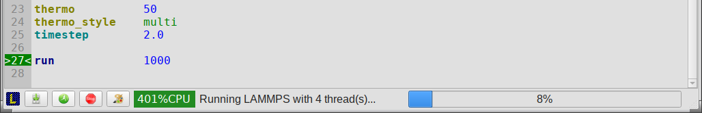
While LAMMPS is running, the contents of the status bar change. The text fields that normally show “Ready.” and the current working directory, change into an area showing the CPU utilization in percent. Nest to it is a text indicating that LAMMPS is running, which also indicates the number of active threads (in case thread-parallel acceleration was selected in the Preferences dialog). On the right side, a progress bar is shown that displays the estimated progress for the current run or minimize command.
CPU Utilization
The CPU Utilization should ideally be close to 100% times the number of threads like in the screenshot image above. Since the GUI is running as a separate thread, the CPU utilization can be higher, for example when the GUI needs to work hard to keep up with the simulation. This can be caused by having frequent thermo output or running a simulation of a small system. In the Preferences dialog, the polling interval for updating the the Output and Charts windows can be set. The intervals may need to be lowered to not miss data between Charts data updates or to avoid stalling when the thermo output is not transferred to the Output window fast enough. It is also possible to reduce the amount of data by increasing the thermo interval. LAMMPS-GUI detects, if the associated I/O buffer is by a significant percentage and will print a warning after the run with suggested adjustments. The utilization can also be lower, e.g. when the simulation is slowed down by the GUI or other processes also running on the host computer and competing with LAMMPS-GUI for GPU resources.
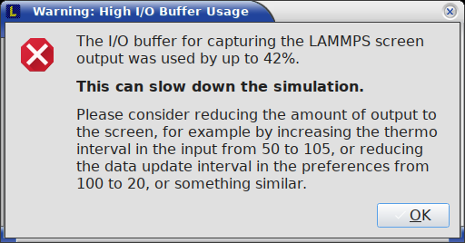
If an error occurs (in the example below the command label was incorrectly capitalized as “Label”), an error message dialog is shown and the line of the input which triggered the error is highlighted in red. The state of LAMMPS in the status bar is set to “Failed.” instead of “Ready.”
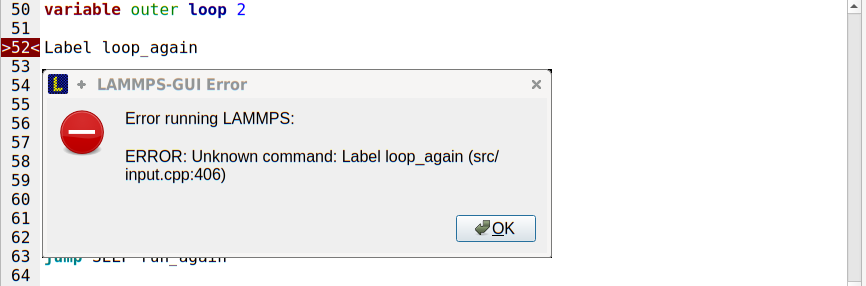
Up to three additional windows may open during a run:
an Output window with the captured screen output from LAMMPS
a Charts window with a line graph created from thermodynamic output of the run
a Slide Show window with images created by a dump image command in the input
More information on those windows and how to adjust their behavior and contents is given below.
An active LAMMPS run can be stopped cleanly by using either the Stop
LAMMPS entry in the Run menu, the keyboard shortcut Ctrl-/
(Command-/ on macOS), or by clicking on the red button in the status
bar. This will cause the running LAMMPS process to complete the current
timestep (or iteration for energy minimization) and then complete the
processing of the buffer while skipping all run or minimize commands.
This is equivalent to the input script command timer timeout 0 and is implemented by calling the
lammps_force_timeout() function of the LAMMPS C-library
interface. Please see the corresponding documentation pages to
understand the implications of this operation.
By default, when starting a run, an Output window opens that displays the screen output of the running LAMMPS calculation, as shown below. This text would normally be seen in the command-line window.
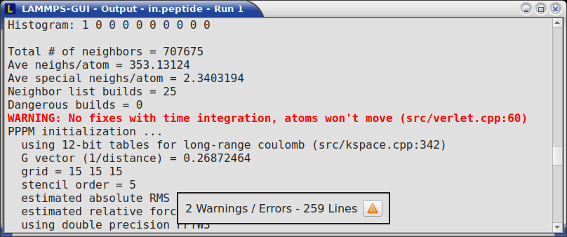
LAMMPS-GUI captures the screen output from LAMMPS as it is generated and updates the Output window regularly during a run. If there are any warnings or errors in the LAMMPS output, they are highlighted by using bold text colored in red. There is a small panel at the bottom center of the Output window showing how many warnings and errors were detected and how many lines the entire output has. By clicking on the button on the right with the warning symbol or by using the keyboard shortcut Ctrl-N (Command-N on macOS), you can jump to the next line with a warning or error. If there is a URL pointing to additional explanations in the online manual, that URL will be highlighted and double-clicking on it shall open the corresponding manual page in the web browser. The option is also available from the context menu.
By default, the Output window is replaced each time a run is started. The runs are counted and the run number for the current run is displayed in the window title. It is possible to change the behavior of LAMMPS-GUI in the preferences dialog to create a new Output window for every run or to not show the current Output window. It is also possible to show or hide the current Output window from the View menu.
The text in the Output window is read-only and cannot be modified, but keyboard shortcuts to select and copy all or parts of the text can be used to transfer text to another program. Also, the keyboard shortcut Ctrl-S (Command-S on macOS) is available to save the Output buffer to a file. The “Select All” and “Copy” functions, as well as a “Save Log to File” option are also available from a context menu by clicking with the right mouse button into the Output window text area.
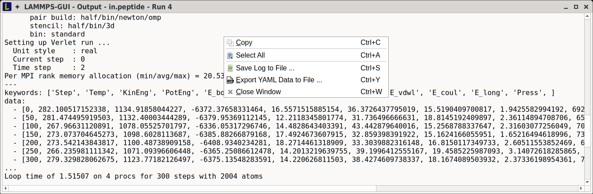
Should the Output window contain embedded YAML format text (see above for a demonstration), for example from using thermo_style yaml or thermo_modify line yaml, the keyboard shortcut Ctrl-Y (Command-Y on macOS) is available to save only the YAML parts to a file. This option is also available from a context menu by clicking with the right mouse button into the Output window text area.
By default, when starting a run, a Charts window opens that displays a plot of thermodynamic output of the LAMMPS calculation as shown below.
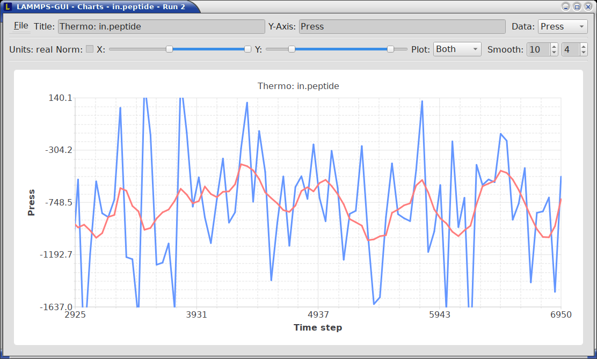
The “Data:” drop down menu on the top right allows selection of different properties that are computed and written as thermodynamic output to the output window. Only one property can be shown at a time. The plots are updated regularly with new data as the run progresses, so they can be used to visually monitor the evolution of available properties. The update interval can be set in the Preferences dialog. By default, the raw data for the selected property is plotted as a blue graph. From the “Plot:” drop menu on the second row and on the left, you can select whether to plot only raw data graph, only a smoothed data graph, or both graphs on top of each other. The smoothing process uses a Savitzky-Golay convolution filter. The convolution window width (left) and order (right) parameters can be set in the boxes next to the drop down menu. Default settings are 10 and 4 which means that the smoothing window includes 10 points each to the left and the right of the current data point for a total of 21 points and a fourth order polynomial is fitted to the data in the window.
The “Title:” and “Y:” input boxes allow to edit the text shown as the plot title and the y-axis label, respectively. The text entered in the “Title:” box is applied to all charts, while the “Y:” text changes only the y-axis label of the currently selected plot.
The window title shows the current run number that this chart window corresponds to. Same as for the Output window, the chart window is replaced on each new run, but the behavior can be changed in the Preferences dialog.
From the File menu on the top left, it is possible to save an image of the currently displayed plot or export the data in either plain text columns (for use by plotting tools like gnuplot or grace), as CSV data which can be imported for further processing with Microsoft Excel LibreOffice Calc or with Python via pandas, or as YAML which can be imported into Python with PyYAML or pandas.
Thermo output data from successive run commands in the input script is combined into a single data set unless the format, number, or names of output columns are changed with a thermo_style or a thermo_modify command, or the current time step is reset with reset_timestep, or if a clear command is issued. This is where the YAML export from the Charts window differs from that of the Output window: here you get the compounded data set starting with the last change of output fields or timestep setting, while the export from the log will contain all YAML output but segmented into individual runs.
The Preferences dialog has a Charts tab, where you can configure multiple chart-related settings, like the default title, colors for the graphs, default choice of the raw / smooth graph selection, and the default chart graph size.
Slowdown of Simulations from Charts Data Processing
Using frequent thermo output during long simulations can result in a significant slowdown of that simulation since it is accumulating many data points for each of the thermo properties in the chart window to be redrawn with every update. The updates are consuming additional CPU time when smoothing enabled. This slowdown can be confirmed when an increasing percentage of the total run time is spent in the “Output” or “Other” sections of the MPI task timing breakdown. It is thus recommended to use a large enough value as argument N for the thermo command and to select plotting only the “Raw” data in the Charts Window during such simulations. It is always possible to switch between the different display styles for charts during the simulation and after it has finished.
Changed in version 1.7: As of LAMMPS-GUI version 1.7 the chart data processing is significantly optimized compared to older versions of LAMMPS-GUI. The general problem of accumulating excessive amounts of data and the overhead of too frequently polling LAMMPS for new data cannot be optimized away, though. If necessary, the command line LAMMPS executable needs to be used and the output accumulated of a very fast disk (e.g. a high-performance SSD).
By default, if the LAMMPS input contains a dump image command, a “Slide Show” window opens which loads and displays the images created by LAMMPS as they are written. This is a convenient way to visually monitor the progress of the simulation.
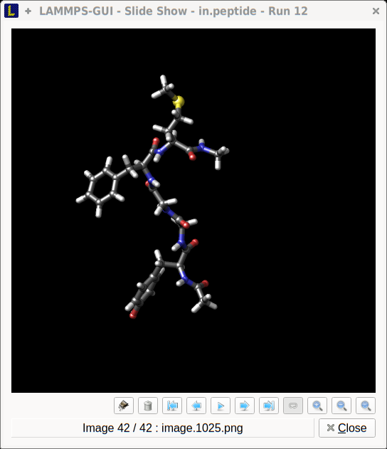
The various buttons at the bottom right of the window allow single stepping through the sequence of images or playing an animation (as a continuous loop or once from first to last). It is also possible to zoom in or zoom out of the displayed images. The button on the very left triggers an export of the slide show animation to a movie file, provided the FFmpeg program is installed.
When clicking on the “garbage can” icon, all image files of the slide show will be deleted. Since their number can be large for long simulations, this option enables to safely and quickly clean up the clutter caused in the working directory by those image files without risk of deleting other files by accident when using wildcards.
During a run, it may be of interest to monitor the value of input script variables, for example to monitor the progress of loops. This can be done by enabling the “Variables Window” in the View menu or by using the Ctrl-Shift-W keyboard shortcut. This shows info similar to the info variables command in a separate window as shown below.
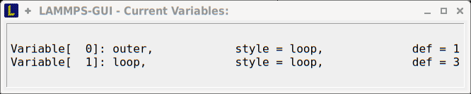
Like for the Output and Charts windows, its content is continuously updated during a run. It will show “(none)” if there are no variables defined. Note that it is also possible to set index style variables, that would normally be set via command-line flags, via the “Set Variables…” dialog from the Run menu. LAMMPS-GUI automatically defines the variable “gui_run” to the current value of the run counter. That way it is possible to automatically record a separate log for each run attempt by using the command
log logfile-${gui_run}.txt
at the beginning of an input file. That would record logs to files
logfile-1.txt, logfile-2.txt, and so on for successive runs.
By selecting the Create Image entry in the Run menu, or by hitting the Ctrl-I (Command-I on macOS) keyboard shortcut, or by clicking on the “palette” button in the status bar of the Editor window, LAMMPS-GUI sends a custom write_dump image command to LAMMPS and reads back the resulting snapshot image with the current state of the system into an image viewer. This functionality is not available during an ongoing run. In case LAMMPS is not yet initialized, LAMMPS-GUI tries to identify the line with the first run or minimize command and execute all commands from the input buffer up to that line, and then executes a “run 0” command. This initializes the system so an image of the initial state of the system can be rendered. If there was an error in that process, the snapshot image viewer does not appear.
When possible, LAMMPS-GUI tries to detect which elements the atoms correspond to (via their mass) and then colorize them in the image and set their atom diameters accordingly. If this is not possible, for instance when using reduced (= ‘lj’) units, then LAMMPS-GUI will check the current pair style and if it is a Lennard-Jones type potential, it will extract the sigma parameter for each atom type and assign atom diameters from those numbers. For cases where atom diameters are not auto-detected, the Atom size field can be edited and a suitable value set manually. The default value is inferred from the x-direction lattice spacing. It is also possible to visualize regions and have bonds computed dynamically for potentials, where the bonds are determined implicitly (like AIREBO. Please see the documentation of the dump image command for more details on these two features.
If elements cannot be detected the default sequence of colors of the dump image command is assigned to the different atom types.
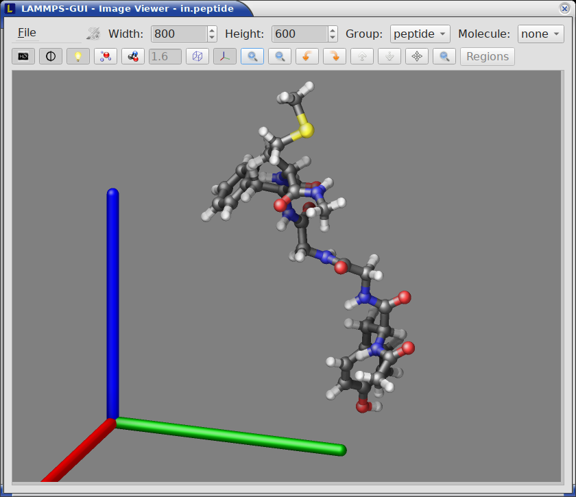 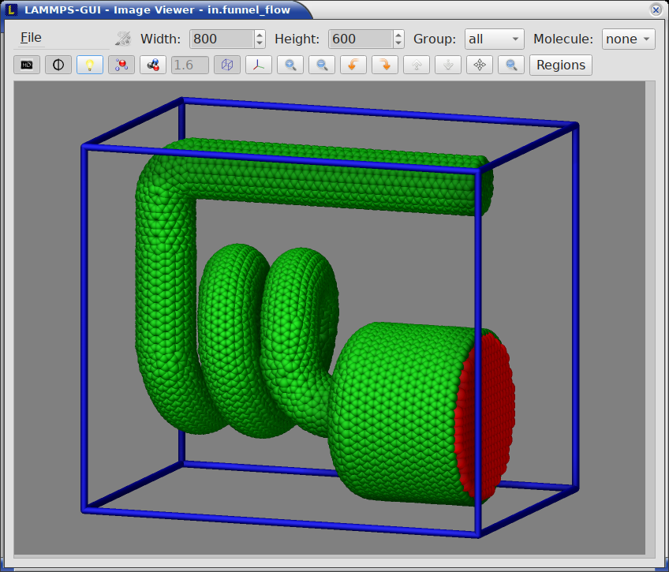 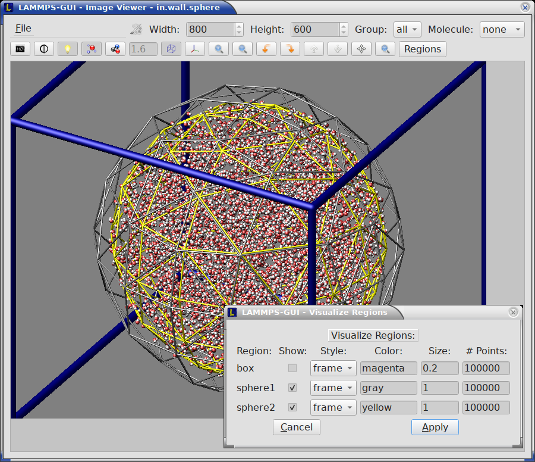 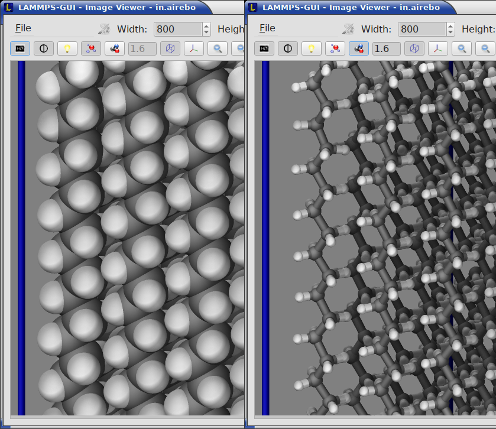
The default image size, some default image quality settings, the view style and some colors can be changed in the Preferences dialog window. From the image viewer window further adjustments can be made: actual image size, high-quality (SSAO) rendering, anti-aliasing, view style, display of box or axes, zoom factor. The view of the system can be rotated horizontally and vertically.
It is also possible to display only the atoms within a group defined in the input script (default is “all”). The available groups can be selected from the drop down list next to the “Group:” label. Similarly, if there are molecules defined in the input, it is possible to select one of them (default is “none”) and visualize it (it will be shown at the center of the simulation box). While a molecule is selected, the group selection is disabled. It can be restored by selecting the molecule “none”.
The image can also be re-centered on the center of mass of the selected group. After each change, the image is rendered again and the display updated. The small palette icon on the top left is colored while LAMMPS is running to render the new image; it is grayed out when LAMMPS is finished. When there are many atoms to render and high quality images with anti-aliasing are requested, re-rendering may take several seconds. From the File menu of the image window, the current image can be saved to a file (keyboard shortcut Ctrl-S) or copied to the clipboard (keyboard shortcut Ctrl-C) for pasting the image into another application.
From the File menu it is also possible to copy the current dump image and dump_modify commands to the clipboard so they can be pasted into a LAMMPS input file so that the visualization settings of the snapshot image can be repeated for the entire simulation (and thus be repeated in the slide show viewer). This feature has the keyboard shortcut Ctrl-D.
The Editor window of LAMMPS-GUI has most of the usual functionality that similar programs have: text selection via mouse or with cursor moves while holding the Shift key, Cut (Ctrl-X), Copy (Ctrl-C), Paste (Ctrl-V), Undo (Ctrl-Z), Redo (Ctrl-Shift-Z), Select All (Ctrl-A). When trying to exit the editor with a modified buffer, a dialog will pop up asking whether to cancel the exit operation, or to save or not save the buffer contents to a file.
The editor has an auto-save mode that can be enabled or disabled in the Preferences dialog. In auto-save mode, the editor buffer is automatically saved before running LAMMPS or before exiting LAMMPS-GUI.
2.10. Context Specific Word Completion¶
By default, LAMMPS-GUI displays a small pop-up frame with possible choices for LAMMPS input script commands or styles after 2 characters of a word have been typed.
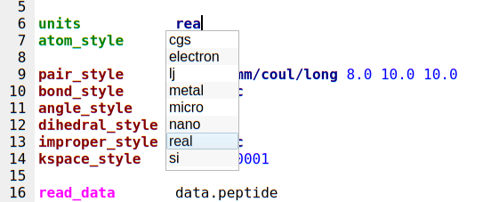
The word can then be completed through selecting an entry by scrolling up and down with the cursor keys and selecting with the ‘Enter’ key or by clicking on the entry with the mouse. The automatic completion pop-up can be disabled in the Preferences dialog, but the completion can still be requested manually by either hitting the ‘Shift-TAB’ key or by right-clicking with the mouse and selecting the option from the context menu. Most of the completion information is retrieved from the active LAMMPS instance and thus it shows only available options that have been enabled when compiling LAMMPS. That list, however, excludes accelerated styles and commands; for improved clarity, only the non-suffix version of styles are shown.
2.11. Line Reformatting¶
The editor supports reformatting lines according to the syntax in order to have consistently aligned lines. This primarily means adding whitespace padding to commands, type specifiers, IDs and names. This reformatting is performed manually by hitting the ‘Tab’ key. It is also possible to have this done automatically when hitting the ‘Enter’ key to start a new line. This feature can be turned on or off in the Preferences dialog for Editor Settings with the “Reformat with ‘Enter’” checkbox. The amount of padding for multiple categories can be adjusted in the same dialog.
Internally this functionality is achieved by splitting the line into “words” and then putting it back together with padding added where the context can be detected; otherwise a single space is used between words.
2.12. Context Specific Help¶
A unique feature of LAMMPS-GUI is the option to look up the LAMMPS documentation for the command in the current line. This can be done by either clicking the right mouse button or by using the Ctrl-? keyboard shortcut. When using the mouse, there are additional entries in the context menu that open the corresponding documentation page in the online LAMMPS documentation in a web browser window. When using the keyboard, the first of those entries is chosen.
If the word under the cursor is a file, then additionally the context menu has an entry to open the file in a read-only text viewer window. If the file is a LAMMPS restart file, instead the menu entry offers to inspect the restart.
The text viewer is a convenient way to view the contents of files that are referenced in the input. The file viewer also supports on-the-fly decompression based on the file name suffix in a similar fashion as available with LAMMPS. If the necessary decompression program is missing or the file cannot be decompressed, the viewer window will contain a corresponding message.
2.13. Inspecting a Restart file¶
When LAMMPS-GUI is asked to “Inspect a Restart”, it will read the restart file into a LAMMPS instance and then open three different windows. The first window is a text viewer with the output of an info command with system information stored in the restart. The second window is text viewer containing a data file generated with a write_data command. The third window is a Snapshot Image Viewer containing a visualization of the system in the restart.
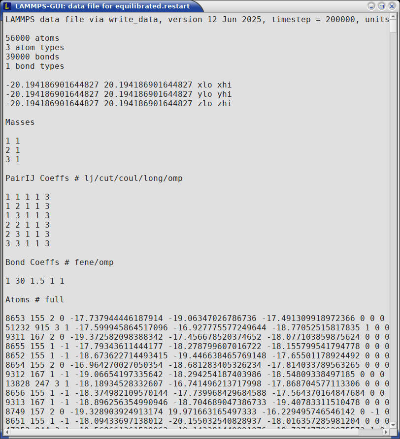 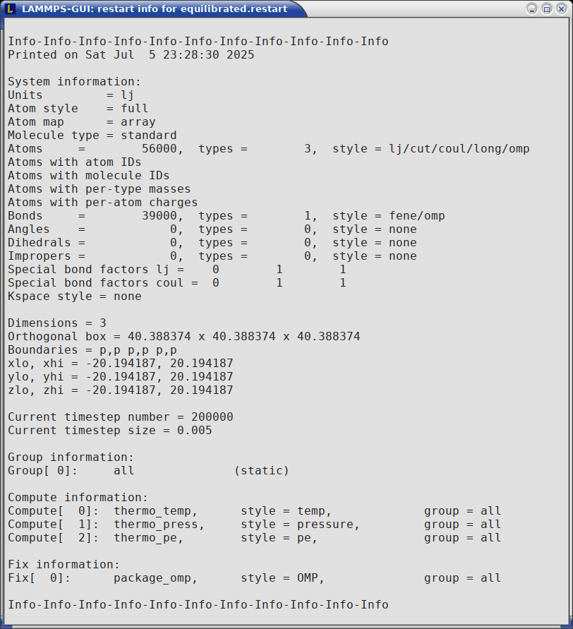 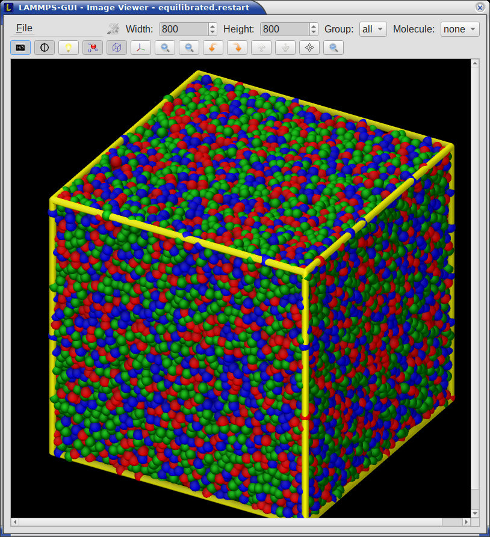
Large Restart Files
If the restart file is larger than 250 MBytes, a dialog will ask for confirmation before continuing, since large restart files may require large amounts of RAM since the entire system must be read into RAM. Thus restart file for large simulations that have been run on an HPC cluster may overload a laptop or local workstation. The Show Details… button will display a rough estimate of the additional memory required.
The menu bar has entries File, Edit, Run, View, and About. Instead of using the mouse to click on them, the individual menus can also be activated by hitting the Alt key together with the corresponding underlined letter, that is Alt-F activates the File menu. For the corresponding activated sub-menus, the key corresponding the underlined letters can be used to select entries instead of using the mouse.
2.14. File¶
The File menu offers the usual options:
New clears the current buffer and resets the file name to
*unknown*Open opens a dialog to select a new file for editing in the Editor
View opens a dialog to select a file for viewing in a separate window (read-only) with support for on-the-fly decompression as explained above.
Inspect restart opens a dialog to select a file. If that file is a LAMMPS restart three windows with information about the file are opened.
Save saves the current file; if the file name is
*unknown*a dialog will open to select a new file nameSave As opens a dialog to select and new file name (and folder, if desired) and saves the buffer to it. Writing the buffer to a different folder will also switch the current working directory to that folder.
Quit exits LAMMPS-GUI. If there are unsaved changes, a dialog will appear to either cancel the operation, or to save, or to not save the modified buffer.
In addition, up to 5 recent file names will be listed after the Open entry that allows re-opening recently opened files. This list is stored when quitting and recovered when starting again.
2.15. Edit¶
The Edit menu offers the usual editor functions like Undo, Redo, Cut, Copy, Paste, and a Find and Replace dialog (keyboard shortcut Ctrl-F). It can also open a Preferences dialog (keyboard shortcut Ctrl-P) and allows deleting all stored preferences and settings, so they are reset to their default values.
2.16. Run¶
The Run menu has options to start and stop a LAMMPS process. Rather than calling the LAMMPS executable as a separate executable, the LAMMPS-GUI is linked to the LAMMPS library and thus can run LAMMPS internally through the LAMMPS C-library interface in a separate thread.
Specifically, a LAMMPS instance will be created by calling
lammps_open_no_mpi(). The buffer contents are then executed by
calling lammps_commands_string(). Certain commands and
features are only available after a LAMMPS instance is created. Its
presence is indicated by a small LAMMPS L logo in the status bar
at the bottom left of the main window. As an alternative, it is also
possible to run LAMMPS using the contents of the edited file by
reading the file. This is mainly provided as a fallback option in
case the input uses some feature that is not available when running
from a string buffer.
The LAMMPS calculations are run in a concurrent thread so that the GUI
can stay responsive and be updated during the run. The GUI can retrieve
data from the running LAMMPS instance and tell it to stop at the next
timestep. The Stop LAMMPS entry will do this by calling the
lammps_force_timeout() library function, which is equivalent
to a timer timeout 0 command.
The Relaunch LAMMPS Instance will destroy the current LAMMPS thread and free its data and then create a new thread with a new LAMMPS instance. This is usually not needed, since LAMMPS-GUI tries to detect when this is needed and does it automatically. This is available in case it missed something and LAMMPS behaves in unexpected ways.
The Set Variables… entry opens a dialog box where index style variables can be set. Those variables are passed to the LAMMPS instance when it is created and are thus set before a run is started.
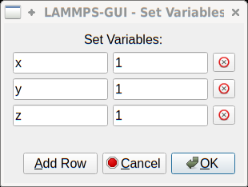
The Set Variables dialog will be pre-populated with entries that are set as index variables in the input and any variables that are used but not defined, if the built-in parser can detect them. New rows for additional variables can be added through the Add Row button and existing rows can be deleted by clicking on the X icons on the right.
The Create Image entry will send a dump image command to the LAMMPS instance, read the resulting file, and show it in an Image Viewer window.
The View in OVITO entry will launch OVITO with a data file containing the current state of the system. This option is only available if LAMMPS-GUI can find the OVITO executable in the system path.
The View in VMD entry will launch VMD with a data file containing the current state of the system. This option is only available if LAMMPS-GUI can find the VMD executable in the system path.
2.17. View¶
The View menu offers to show or hide additional windows with log output, charts, slide show, variables, or snapshot images. The default settings for their visibility can be changed in the Preferences dialog.
2.18. Tutorials¶
The Tutorials menu is to support the set of LAMMPS tutorials for
beginners and intermediate LAMMPS users documented in (Gravelle1). From the drop down menu you can select which of the
eight currently available tutorial sessions you want to begin. This
opens a ‘wizard’ dialog where you can choose in which folder you want to
work, whether you want that folder to be wiped from any files, whether
you want to download the solutions files (which can be large) to a
solution sub-folder, and whether you want the corresponding
tutorial’s online version opened in your web browser. The dialog will
then start downloading the files requested (download progress is
reported in the status line) and load the first input file for the
selected session into LAMMPS-GUI.
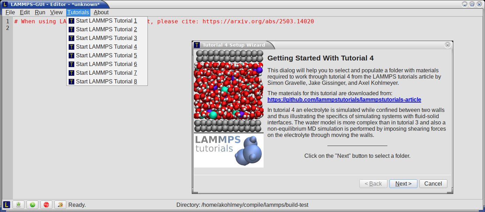
2.19. About¶
The About menu finally offers a couple of dialog windows and an option to launch the LAMMPS online documentation in a web browser. The About LAMMPS-GUI entry displays a dialog with a summary of the configuration settings of the LAMMPS library in use and the version number of LAMMPS-GUI itself. The Quick Help displays a dialog with a minimal description of LAMMPS-GUI. The LAMMPS-GUI Howto entry will open this documentation page from the online documentation in a web browser window. The LAMMPS Manual entry will open the main page of the LAMMPS online documentation in a web browser window. The LAMMPS Tutorial entry will open the main page of the set of LAMMPS tutorials authored and maintained by Simon Gravelle at https://lammpstutorials.github.io/ in a web browser window.
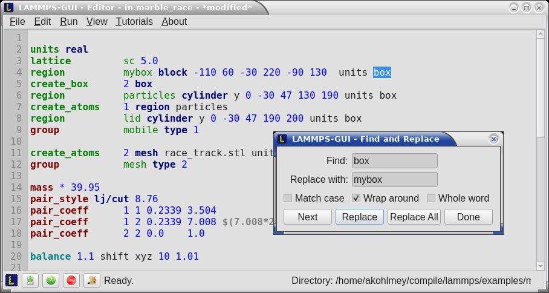
The Find and Replace dialog allows searching for and replacing text in the Editor window.
The dialog can be opened either from the Edit menu or with the keyboard shortcut Ctrl-F. You can enter the text to search for. Through three check-boxes the search behavior can be adjusted:
If checked, “Match case” does a case sensitive search; otherwise the search is case insensitive.
If checked, “Wrap around” starts searching from the start of the document, if there is no match found from the current cursor position until the end of the document; otherwise the search will stop.
If checked, the “Whole word” setting only finds full word matches (white space and special characters are word boundaries).
Clicking on the Next button will search for the next occurrence of the search text and select / highlight it. Clicking on the Replace button will replace an already highlighted search text and find the next one. If no text is selected, or the selected text does not match the selection string, then the first click on the Replace button will only search and highlight the next occurrence of the search string. Clicking on the Replace All button will replace all occurrences from the cursor position to the end of the file; if the Wrap around box is checked, then it will replace all occurrences in the entire document. Clicking on the Done button will dismiss the dialog.
The Preferences dialog allows customization of the behavior and look of LAMMPS-GUI. The settings are grouped and each group is displayed within a tab.
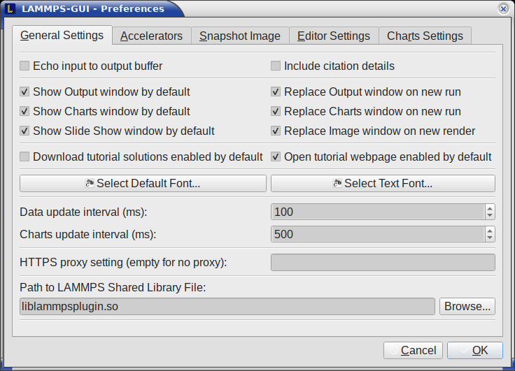 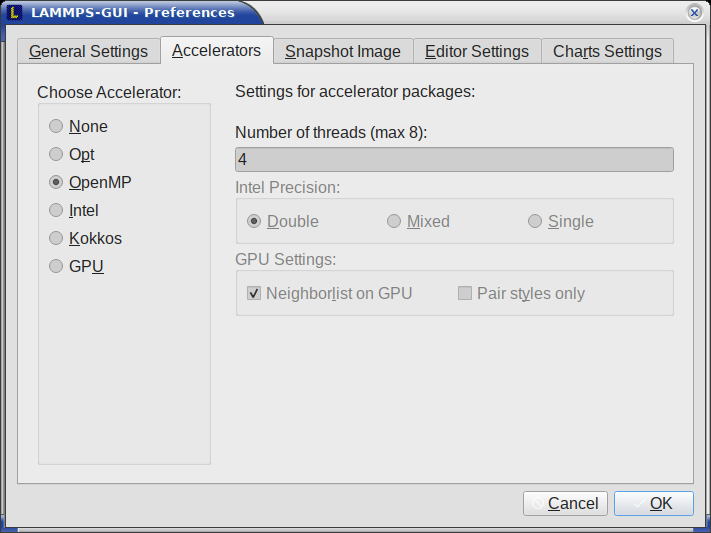 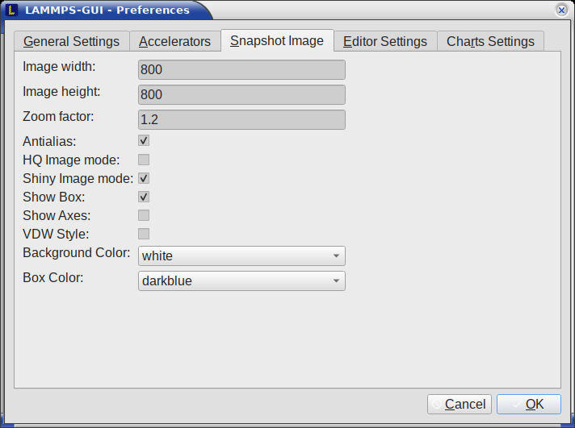 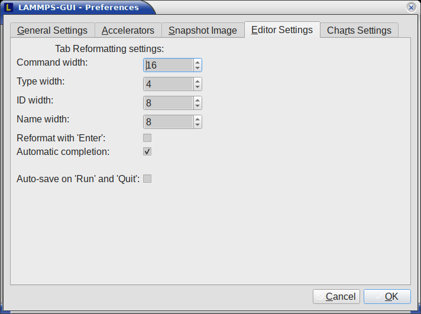 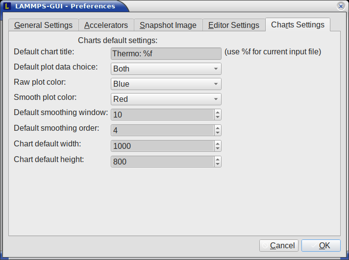
2.20. General Settings:¶
Echo input to log: when checked, all input commands, including variable expansions, are echoed to the Output window. This is equivalent to using -echo screen at the command-line. There is no log file produced by default, since LAMMPS-GUI uses -log none.
Include citation details: when checked full citation info will be included to the log window. This is equivalent to using -cite screen on the command-line.
Show log window by default: when checked, the screen output of a LAMMPS run will be collected in a log window during the run
Show chart window by default: when checked, the thermodynamic output of a LAMMPS run will be collected and displayed in a chart window as line graphs.
Show slide show window by default: when checked, a slide show window will be shown with images from a dump image command, if present, in the LAMMPS input.
Replace log window on new run: when checked, an existing log window will be replaced on a new LAMMPS run, otherwise each run will create a new log window.
Replace chart window on new run: when checked, an existing chart window will be replaced on a new LAMMPS run, otherwise each run will create a new chart window.
Replace image window on new render: when checked, an existing chart window will be replaced when a new snapshot image is requested, otherwise each command will create a new image window.
Download tutorial solutions enabled this controls whether the “Download solutions” option is enabled by default when setting up a tutorial.
Open tutorial webpage enabled this controls whether the “Open tutorial webpage in web browser” option is enabled by default when setting up a tutorial.
Select Default Font: Opens a font selection dialog where the type and size for the default font (used for everything but the editor and log) of the application can be set.
Select Text Font: Opens a font selection dialog where the type and size for the text editor and log font of the application can be set.
Data update interval: Allows to set the time interval between data updates during a LAMMPS run in milliseconds. The default is to update the data (for charts and output window) every 10 milliseconds. This is good for many cases. Set this to 100 milliseconds or more if LAMMPS-GUI consumes too many resources during a run. For LAMMPS runs that run very fast (for example in tutorial examples), however, data may be missed and through lowering this interval, this can be corrected. However, this will make the GUI use more resources. This setting may be changed to a value between 1 and 1000 milliseconds.
Charts update interval: Allows to set the time interval between redrawing the plots in the Charts window in milliseconds. The default is to redraw the plots every 500 milliseconds. This is just for the drawing, data collection is managed with the previous setting.
HTTPS proxy setting: Allows to enter a URL for an HTTPS proxy. This may be needed when the LAMMPS input contains geturl commands or for downloading tutorial files from the Tutorials menu. If the
https_proxyenvironment variable was set externally, its value is displayed but cannot be changed.Path to LAMMPS Shared Library File: this option is only visible when LAMMPS-GUI was compiled to load the LAMMPS library at run time instead of being linked to it directly. With the Browse.. button or by changing the text, a different shared library file with a different compilation of LAMMPS with different settings or from a different version can be loaded. After this setting was changed, LAMMPS-GUI needs to be re-launched.
2.21. Accelerators:¶
This tab enables selection of an accelerator package and modify some of its settings to use for running LAMMPS and is equivalent to using the -sf and -pk flags on the command-line. Only settings supported by the LAMMPS library and local hardware are available. The Number of threads field allows setting the number of threads for the accelerator packages that support using threads (OPENMP, INTEL, KOKKOS, and GPU). Furthermore, the choice of precision mode (double, mixed, or single) for the INTEL package can be selected and for the GPU package, whether the neighbor lists are built on the GPU or the host (required for pair style hybrid) and whether only pair styles should be accelerated (i.e. run PPPM entirely on the CPU, which sometimes leads to better overall performance). Whether settings can be changed depends on which accelerator package is chosen (or “None”).
2.22. Snapshot Image:¶
This tab allows setting defaults for the snapshot images displayed in the Image Viewer window, such as its dimensions and the zoom factor applied. The Antialias switch will render images with twice the number of pixels for width and height and then smoothly scale the image back to the requested size. This produces higher quality images with smoother edges at the expense of requiring more CPU time to render the image. The HQ Image mode option turns on screen space ambient occlusion (SSAO) mode when rendering images. This is also more time consuming, but produces a more ‘spatial’ representation of the system shading of atoms by their depth. The Shiny Image mode option will render objects with a shiny surface when enabled. Otherwise the surfaces will be matted. The Show Box option selects whether the system box is drawn as a colored set of sticks. Similarly, the Show Axes option selects whether a representation of the three system axes will be drawn as colored sticks. The VDW Style checkbox selects whether atoms are represented by space filling spheres when checked or by smaller spheres and sticks. Finally there are a couple of drop down lists to select the background and box colors.
2.23. Editor Settings:¶
This tab allows tweaking settings of the editor window. Specifically, the amount of padding to be added to LAMMPS commands, types or type ranges, IDs (e.g. for fixes), and names (e.g. for groups). The value set is the minimum width for the text element and it can be chosen in the range between 1 and 32.
The three settings which follow enable or disable the automatic reformatting when hitting the ‘Enter’ key, the automatic display of the completion pop-up window, and whether auto-save mode is enabled. In auto-save mode the editor buffer is saved before a run or before exiting LAMMPS-GUI.
This tab allows tweaking settings of the Charts window. Specifically, one can set the default chart title (if the title contains ‘%f’ it will be replaced with the name of the current input file), one can select whether by default the raw data, the smoothed data or both will be plotted, one can set the colors for the two lines, the default smoothing parameters, and the default size of the chart graph in pixels.
Almost all functionality is accessible from the menu of the editor window or through keyboard shortcuts. The following shortcuts are available (On macOS use the Command key instead of Ctrl/Control).
Shortcut |
Function |
Shortcut |
Function |
Shortcut |
Function |
|---|---|---|---|---|---|
Ctrl+N |
New File |
Ctrl+Z |
Undo edit |
Ctrl+Enter |
Run Input |
Ctrl+O |
Open File |
Ctrl+Shift+Z |
Redo edit |
Ctrl+/ |
Stop Active Run |
Ctrl+Shift+F |
View File |
Ctrl+C |
Copy text |
Ctrl+Shift+V |
Set Variables |
Ctrl+S |
Save File |
Ctrl+X |
Cut text |
Ctrl+I |
Snapshot Image |
Ctrl+Shift+S |
Save File As |
Ctrl+V |
Paste text |
Ctrl+L |
Slide Show |
Ctrl+Q |
Quit Application |
Ctrl+A |
Select All |
Ctrl+F |
Find and Replace |
Ctrl+W |
Close Window |
TAB |
Reformat line |
Shift+TAB |
Show Completions |
Ctrl+Shift+Enter |
Run File |
Ctrl+Shift+W |
Show Variables |
Ctrl+P |
Preferences |
Ctrl+Shift+A |
About LAMMPS |
Ctrl+Shift+H |
Quick Help |
Ctrl+Shift+G |
LAMMPS-GUI Howto |
Ctrl+Shift+M |
LAMMPS Manual |
Ctrl+? |
Context Help |
Ctrl+Shift+T |
LAMMPS Tutorial |
Further keybindings of the editor window are documented with the Qt documentation. In case of conflicts the list above takes precedence.
All other windows only support a subset of keyboard shortcuts listed above. Typically, the shortcuts Ctrl-/ (Stop Run), Ctrl-W (Close Window), and Ctrl-Q (Quit Application) are supported.
(Gravelle1) Gravelle, Alvares, Gissinger, Kohlmeyer, arXiv:2503.14020 [physics.comp-ph] (2025)
(Gravelle2) Gravelle https://lammpstutorials.github.io/

{kind=link}
{kind=link}
{kind=link}
{kind=link}
{kind=link}
{kind=link}
{kind=link}
{kind=link}
{kind=link}
{kind=link}
{kind=link}
{kind=link}
{kind=link}
{kind=link}
{kind=link}
{kind=link}
{kind=link}
{kind=link}
{kind=link}
{kind=link}
{kind=link}
{kind=link}
{kind=link}
{kind=link}
{kind=link}
{kind=link}
{kind=link}
{kind=link}